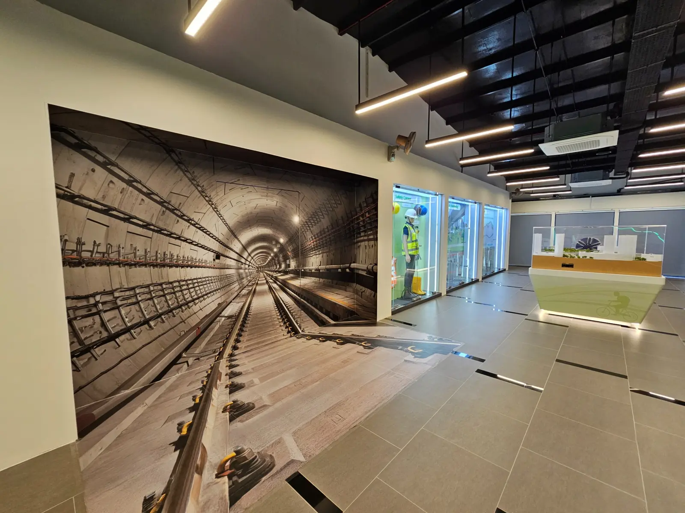
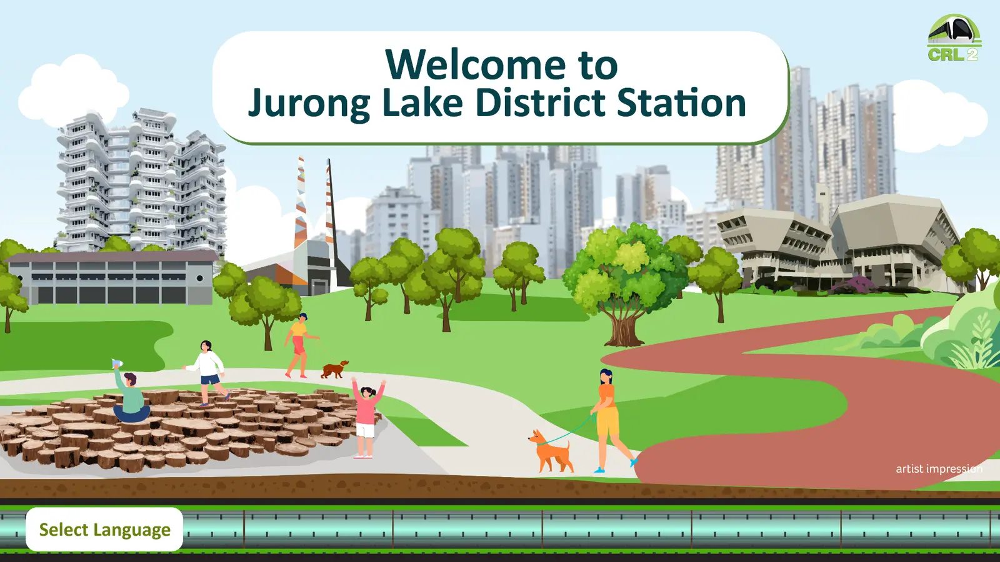
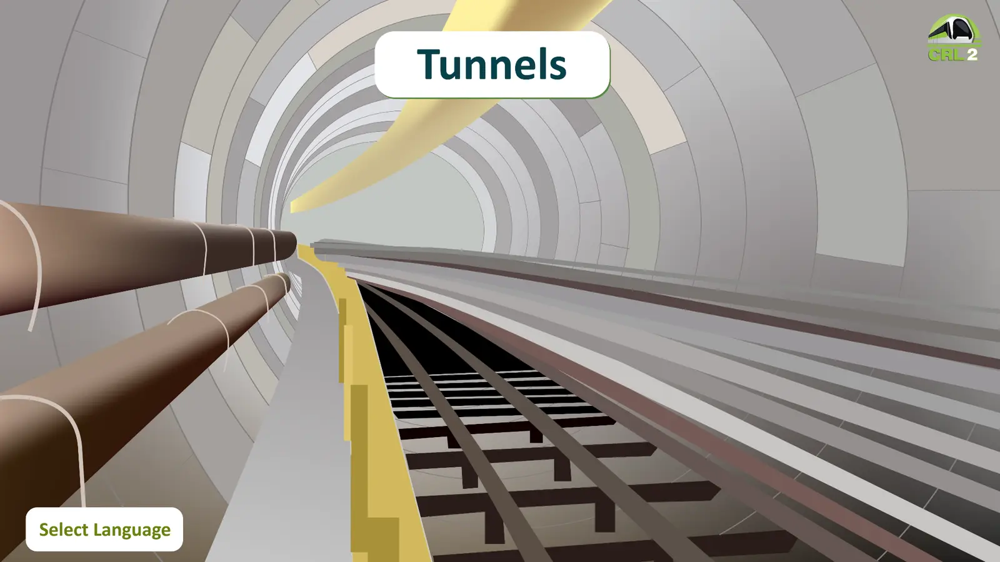
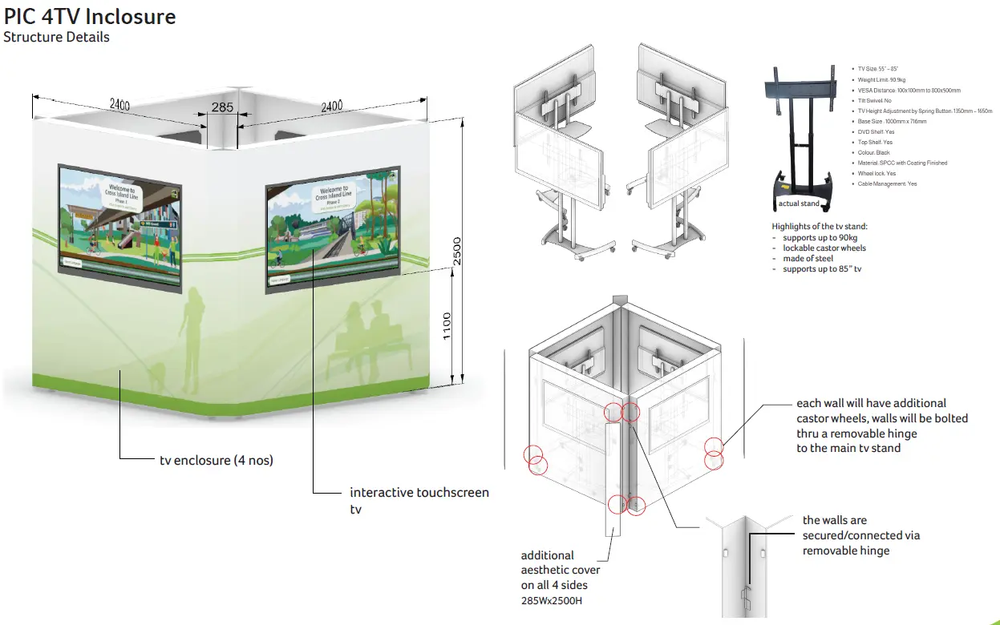

CROSS ISLAND LINE PHASE 2 · MID-2024
Project Information
Centre
A locally grounded visitor experience linking Singapore landmarks, community activity and infrastructure information through one visual language.

DESIGN RESPONSE
Following LTA feedback, I developed a consistent look and feel linking the exhibition to the approved project newsletter: familiar landmarks, community activities, green graphics and a shared system across physical displays and digital menus.




